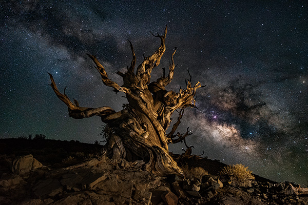

Cobey Cobb
NuStar X-Ray Telescope
The NuStar space telescope detects high-energy X-ray light and studies some of the most energetic objects and processes in the universe, from black holes devouring hot gas to the radioactive remains of exploded stars.

COMAP (CO Mapping Array Project)t
A new Caltech project, called COMAP (CO Mapping Array Project), will offer us a new glimpse into this epoch of galaxy assembly, helping to answer questions about what really caused the universe's rapid increase in the production of stars.
Palomar Observatory
The Observatory is home to three active research telescopes. Research at Palomar Observatory is pursued by a broad community of astronomers from Caltech and other domestic and international partner institutions.

UltraViolet EXplorer (UVEX)
UVEX will conduct a deep survey of the whole sky in two bands of ultraviolet light to provide new insights into galaxy evolution and the life cycle of stars.
Publications
Here are some of my recent publications.
The Surface of (16) Psyche from Thermal Emission and Polarization Mapping
de Kleer, K., Cambioni, S., Shepard, M. | PSJ, in press |
Link to arXiv article
Asteroid 16 Psyche: Shape, Features, and Global Map
Shepard, M., de Kleer, K., Cambioni, S., Taylor, P.A., Virkki, A., Rivera-Valentin, E., Sanchez-Vahamonde, C.R., Zambrano-Marin, L.F., Magri, C., Dunham, D., Moore, J., Camarca, M. | PSJ, in press |
Link to arXiv article
A 2020 Observational Perspective of Io
de Pater, I., Keane, J.T., de Kleer, K., Davies, A.G.
| Annual Reviews in Earth and Planetary Sciences 49 643-678 (2021) |
Link to arXiv article
Ganymede's Surface Properties from Millimeter and Infrared Thermal Emission
de Kleer, K., Butler, B., de Pater, I., Gurwell, M.A., Moullet, A., Trumbo, S., Spencer, J. | PSJ, in press |
Link to arXiv article
ALMA observations of Io going into and coming out of Eclipse
de Pater, I., Luszcz-Cook, S., Rojo, P., Redwing, E., de Kleer, K., Moullet, A. | PSJ, in press |
Link to arXiv article
The Surface of (16) Psyche from Thermal Emission and Polarization Mapping
de Kleer, K., Cambioni, S., Shepard, M. | PSJ, in press |
Link to arXiv article
Outreach
One of our duties as scientists is to share our knowledge of the natural world with our communities. At Caltech, I have assumed the ad hoc position of Director of Outreach in the Astronomy Department, leading a series of efforts to increase public education of science in the LA area. I organize the Caltech Astronomy Stargazing and Public Lecture Series to showcase some of the amazing science done at Caltech and provide free opportunities for members of the public to view the heavens through telescopes.I also lead the Los Angeles chapter of Astronomy on Tap, an opportunity for the public to hear short informal science-based talks in a bar while drinking and visiting with world-class astronomers. In addition, I organize a number of guerilla science events aimed at engaging with the public in non-traditional ways like Science Train and Sidewalk Stargazing. Look at some of the events I've organized at the link below.
For Fun
 When I'm not making websites I love being out in nature. I've been doing astrophotography for three years and this amazing hobby has taken me all over the country looking for dark skies and beautiful landscapes.
When I'm not making websites I love being out in nature. I've been doing astrophotography for three years and this amazing hobby has taken me all over the country looking for dark skies and beautiful landscapes.
Some of the best places I've visited have been in Utah. In October 2020 I was working from home and decided to go on the big road trip I'd always told myself I'd do but had never done. I had planned on driving up the coast of California but the wildfires happening at that time prevented me from camping and COVID prevented me from staying in hotels.
At the last minute I decided to drive to Utah, knowing basically nothing about it. Needless to say, I was shocked. I had no clue the goods that Utah was packing. If you've been there you know what I'm talking about. If you haven't, please go. It has every kind of landscape you can imagine and a bunch that you never could.
My favorite thing about astrophotography is that places with dark skies usually means they are far away from big towns and lots of people. I find it so peaceful sitting out under the stars, miles away from civilization, enjoying the Universe as it is without any reminders of the stresses of modern day. A lot of the most profound moments of my life have taken place out there under the stars, sometimes with other people, sometimes just me and the sky. I love it.
If you'd like to see more of my photos or ask me how you can started going out and taking your own photos, reach out to me on Instagram!
Get in touch
About This Sample Website
The best thing about this site is there are no monthly charges. Once the site is set up, it is 100% free and you can take this site with you whenever you leave your organization. The only thing you'd pay is if you decided to buy your own domain name, which costs around $13/year.
Ready to get started? Email me @ cobeycobb@gmail.com
-
Address
1200 E. California Blvd.
Pasadena, CA 91125
USA -
Email
cobeycobb@gmail.com -
Phone
(334) 399-1967 -
Social